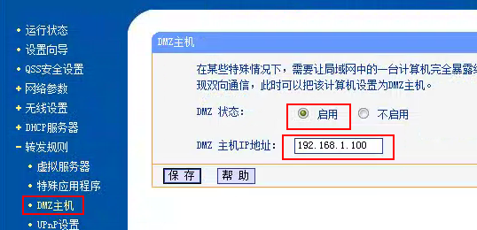

800错误：请不要选自动
809：线路不支持L2TP模式，请选择P_L列有个L字的
807：这是个片面的错误，可能是服务器的问题，也可能是本机的问题。
首先在中国大陆列表里乱挑线路，尽量不要选择最顶的，在线率比较高，只要出现一条能连接，说明你的电脑没问题，你所遇到的807全是服务器的问题
乱选10条左右，如果基本上是807，很可能是电脑的问题，需要设置一下路由器

首先打开路由器控制台，如果不知道怎么打开可以点击开始-运行-cmd
输入ipconfig
向上拉，找下一个叫本地连接的(一般叫本地连接)
然后发现默认网关(192.168.1.1)，那就是路由器控制台的地址，同时，我们还要记住ipv4地址(192.168.1.100)，一会用得上

打开浏览器，输入默认网关，也就是刚刚记住的192.168.1.1，并输入密码后打开控制台，如果不知道密码的话，要重置路由器，怎么重置就不说了，自己百度，然后点击转发规则-DMZ主机，DMZ主机地址写刚刚记住的ipv4地址
最后，保存即可